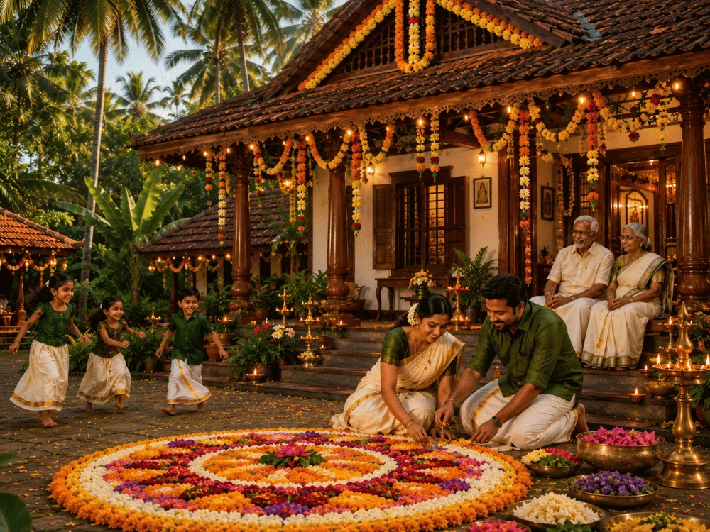

Onam is the major traditional festival of Kerala. It is a harvest festival celebrated with great enthusiasm by people across Kerala. The festival is associated with the legend of King Mahabali, whose return to Kerala is traditionally believed to be celebrated during Onam.